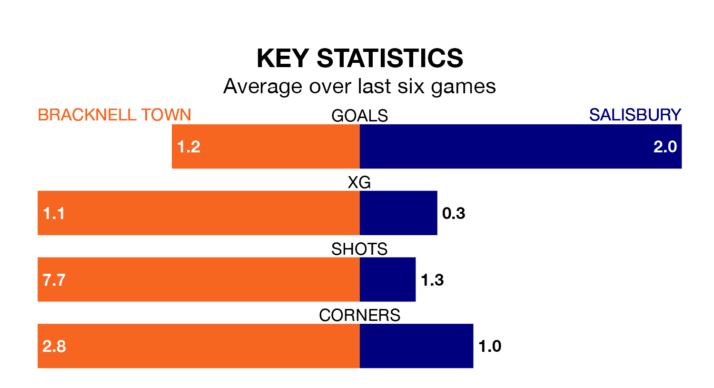

Salisbury travel to Bracknell Town on Saturday in Southern League Premier South.
The visitors come into the game on the back of a win in their last match, having beaten Poole Town 5-4 away.
Bracknell, meanwhile, lost their last match, 3-2 against Hayes and Yeading United.
Salisbury are second in the table after 28 games, of which they have won 17 and drawn six, earning 57 points.
Bracknell are six places behind the visitors in eighth, with 12 wins and three draws putting them on 39 points.
With 52 goals in 28 games so far this season, Town are scoring more than average in the league with 1.9 goals per game. And they are conceding at an average rate, letting in 47 goals at a rate of 1.7 per game.
Salisbury are also above average scorers, with 1.8 goals per game, compared to a league average of 1.7. They have conceded 1.1 goals per game.
In the last five years, Bracknell and Salisbury have played each other on four occasions. They won two each.
On average, Bracknell scored 2.0 goals and Salisbury 1.2 in those matches.
Their last meeting was on September 23, when Salisbury won 2-0 at home.
The home team are in mixed form in Southern League Premier South, with two wins and a draw from their last six games.
With three wins and two draws over that period, Salisbury's form is better – they have taken 11 points from 18, compared to Bracknell's seven.
Updated: 10:40 (UTC), 01/02/24